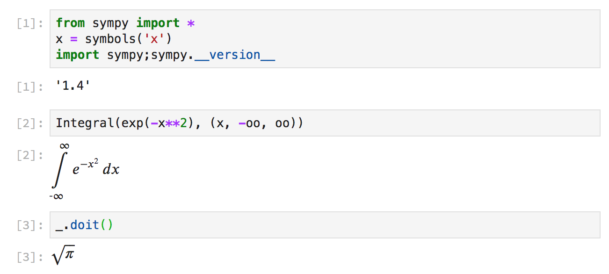

What's New in SymPy 1.4
This post has been cross-posted on the Quansight Blog.
SymPy 1.4 was released on April 9, 2019. In this post, I'd like to go over some of the highlights for this release. The full release notes for the release can be found on the SymPy wiki.
To update to SymPy 1.4, use
conda install sympy
or if you prefer to use pip
pip install -U sympy
The SymPy 1.4 release contains over 500 changes from 38 different submodules, so I will not be going over every change, but only a few of the main highlights. A total of 104 people contributed to this release, including 66 people contributed for the first time for this release.
Automatic LaTeX rendering in the Jupyter notebook
Prior to SymPy 1.4, SymPy expressions in the notebook rendered with their
default string representation, unless init_printing() was called, after
which they rendered with LaTeX:
In SymPy 1.4, SymPy expressions now automatically render as LaTeX in the notebook:
However, this only applies automatically if the type of an object is a SymPy
expression. For built-in types such as lists or ints, init_printing() is
still required to get LaTeX printing. For example, solve() returns a list,
so does not render as LaTeX unless init_printing() is called:
Improved simplification
simplification of relational and piecewise expressions has been improved:
>>> x, y, z, w = symbols('x y z w')
>>> init_printing()
>>> And(Eq(x,y), x >= y, w < y, y >= z, z < y)
x = y ∧ x ≥ y ∧ y ≥ z ∧ w < y ∧ z < y
>>> simplify(And(Eq(x,y), x >= y, w < y, y >= z, z < y))
x = y ∧ y > Max(w, z)
>>> Piecewise((x*y, And(x >= y, Eq(y, 0))), (x - 1, Eq(x, 1)), (0, True))
⎧ x⋅y for y = 0 ∧ x ≥ y
⎪
⎨x - 1 for x = 1
⎪
⎩ 0 otherwise
>>> simplify(Piecewise((x*y, And(x >= y, Eq(y, 0))), (x - 1, Eq(x, 1)), (0, True)))
0
Improved MathML printing
The MathML content and presentation printers have been greatly improved, putting them on par with the existing Unicode and LaTeX pretty printers.
>>> mathml(Integral(exp(-x**2), (x, -oo, oo)), 'presentation')
<mrow><msubsup><mo>∫</mo><mrow><mo>-</mo><mi>∞</mi></mrow><mi>∞</mi></msubsup><msup><mi>ⅇ</mi><mrow><mo>-</mo><msup><mi>x</mi><mn>2</mn></msup></mrow></msup><mo>ⅆ</mo><mi>x</mi></mrow>
>>> mathml(Integral(exp(-x**2), (x, -oo, oo)), 'content')
<apply><int/><bvar><ci>x</ci></bvar><lowlimit><apply><minus/><infinity/></apply></lowlimit><uplimit><infinity/></uplimit><apply><exp/><apply><minus/><apply><power/><ci>x</ci><cn>2</cn></apply></apply></apply></apply>
If your browser supports MathML (at the
time of writing, only Firefox and Safari), you should see the above
presentation form for Integral(exp(-x**2), (x, -oo, oo)) below:
Comments
Comments powered by Disqus